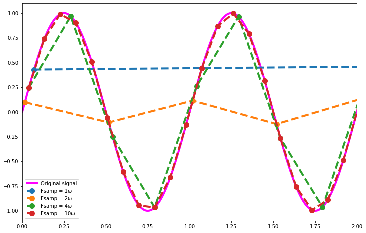
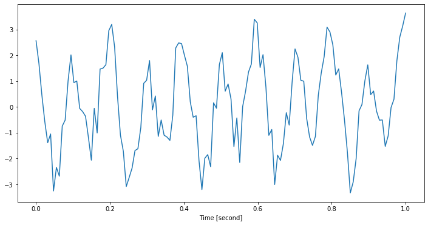
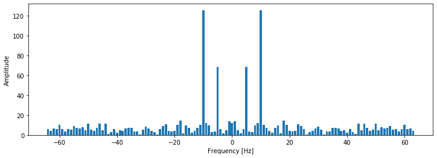
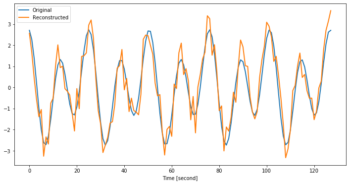
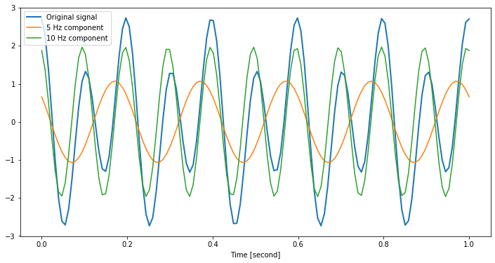

%matplotlib inline
import matplotlib.pyplot as plt
import numpy as npFourier transform decomposes a signal into the sinusoidal components with different amplitude, frequency and phases such that the sum of those components equals to the signal. It transforms a signal from time domain to frequency domain. Fourier transform is applicable to both continuous and discrete signals. In this post, we will only cover the discrete case.
For a signal with N points, Discrete Fourier Transform uses the following bases:
\(e^{i~2\pi~k} = \cos (2\pi~k)+i\sin (2\pi~k)\)
for k = -N/2 … N/2 where k=1 means 1 cycle per signal.
Nyquist’s Sampling Theorem
To be able to measure a sinusoidal wave, we need to sample at least two points within its one full cycle, i.e., one point in half cycle. Therefore, we cannot measure the components that make more than N/2 cycles within N timesteps. This is known as Nyquist’s sampling theorem. In practice, because of the risk of sampling those two points near zero crossings, we are only confident about the components with frequencies lower than N/4.
As an example, let’s see the measurements from 1 Hz sine wave with various sampling rates. Nyquist’s sampling theorem requires at least 2 Hz sampling rate for this signal. As you can see in the figure below, the sampling rate of 1 Hz (blue) measures a flat line. While sampling rate of 2 Hz (orange) is theoretically sufficent, its amplitude is far from the original’s. As the sampling rate increases, the measurement becomes more accurate.
# Original signal
w = 1 # frequency of sine wave, [Hz]
T = 3 # duration of signal [second]
fs = 128 # underlying sampling rate of signal[Hz]
t = np.linspace(0, T, fs * T)
y = np.sin(2*np.pi*w*t)
indices = np.arange(len(t))
fs_list = [1, 2, 4, 10]
samples = []
for f in fs_list:
offset = np.random.randint(0, 10)
idx = indices[:-offset:fs//f] + offset
t_sampled = t[idx]
y_sampled = y[idx]
samples.append((f, t_sampled, y_sampled))Code
plt.figure(figsize=(12, 8))
plt.plot(t, y, color='magenta', lw=4);
legends = ['Original signal']
for f, ts, ys in samples:
plt.plot(ts, ys, marker='o', ms=10, linestyle='--', lw=4);
legends.append(f'Fsamp = {f}ω')
plt.legend(legends, loc='lower left')
plt.xlim([0, 2]);
Discrete Fourier Transform
Discrete Fourier Transform
\[ X_k = \sum_{n=0}^{N-1} x_n \cdot e^{-i~2\pi~k~n~/~N} \]
Inverse Discrete Fourier Transform
\[ x_n = \frac{1}{N}\sum_{k=0}^{N-1} X_k e^{i~2\pi~k~n~/~N} \]
The intuition behind first formula is that kth cosine component takes k/N cycles in 1 timestep or point interval. In other words, its angular velocity is 2πk/N radians/timestep. To make kth component’s peak align with nth point, we need adjust the phase of kth component. Since it takes 2πk/N radians in one timestep, until nth point, it takes 2πkn/N radians. Therefore, we need to delay this component for 2πkn/N radians. To delay, we need to subtract from its phase, which means rotating its complex representation in negative/counter-clock-wise direction. Hence, there is a minus sign in front.
From the above formula, for N point signal, a naive Fourier transform algorithm has O(N2) time complexity. However, Cooley and Tukey (1965) proposed an O(N logN) algorithm; hence, named as Fast Fourier Transform. It benefits the symmetry in the problem and uses recursive divide-conquer approach. Checkout this detailed explanation of FFT algorithm, if you’re interested.
Numpy provides FFT algorithm in numpy.fft subpackage along with some utilities.
Let’s have a signal consisting of two sinusoidal waves with 5 Hz and 10 Hz and uniform noise. Since FFT makes recursive calls to divide the signal into two halves, the number of points in the signal must be power of 2.
fs = 128 # sampling rate, [Hz]
T = 1 # duration of signal, [second]
t = np.linspace(0, T, fs)
N = len(t)components = [
(1, 5, np.pi/4), # amplitude, frequency [Hz], phase [radian]
(2, 10, 0),
]
signal = sum([a * np.cos(2*np.pi*w*t + p) for (a, w, p) in components])
noise = 1*np.random.uniform(-1, 1, N)
x = signal + noiseCode
plt.figure(figsize=(12, 6))
plt.plot(t, x)
plt.xlabel("Time [second]");
DFT produces N complex coefficients xk per each component with frequency of k. Here, k denotes normalized frequency with unit of cycle/point and it ranges from -0.5 to 0.5. We can convert these frequencies to Hertz, by substituting point with time interval between consecutive points.
\[ \frac{cycle}{point} = \frac{cycle}{\frac{t~seconds}{N~points}} = \frac{N}{t} * \frac{cycle}{second} = \frac{N}{t}~Hz \]
Numpy provides a utility function numpy.fft.fftfreq that takes number of points in DFT and timestep which is multiplicative inverse of sampling rate.
N = len(signal)
xk = np.fft.fft(x)
freq = np.fft.fftfreq(n=N, d=1/fs)print(xk[:5])[12.07258851 +0.j 3.04180456+13.42630117j
2.4691799 -4.18227651j 1.64226413 -0.16802957j
5.91780044 +1.05461309j]print(freq)[ 0. 1. 2. 3. 4. 5. 6. 7. 8. 9. 10. 11. 12. 13.
14. 15. 16. 17. 18. 19. 20. 21. 22. 23. 24. 25. 26. 27.
28. 29. 30. 31. 32. 33. 34. 35. 36. 37. 38. 39. 40. 41.
42. 43. 44. 45. 46. 47. 48. 49. 50. 51. 52. 53. 54. 55.
56. 57. 58. 59. 60. 61. 62. 63. -64. -63. -62. -61. -60. -59.
-58. -57. -56. -55. -54. -53. -52. -51. -50. -49. -48. -47. -46. -45.
-44. -43. -42. -41. -40. -39. -38. -37. -36. -35. -34. -33. -32. -31.
-30. -29. -28. -27. -26. -25. -24. -23. -22. -21. -20. -19. -18. -17.
-16. -15. -14. -13. -12. -11. -10. -9. -8. -7. -6. -5. -4. -3.
-2. -1.]# the frequencies
normalized_freq = np.fft.fftfreq(n=N)
freq_manual = normalized_freq * N / T
assert np.allclose(freq, freq_manual)# Bring negative frequencies to the front of the array
fr = np.roll(freq, N//2)
amp = np.roll(np.abs(xk), N//2)
phase = np.roll(np.angle(xk), N//2)Code
plt.figure(figsize=(12, 4))
plt.bar(fr, amp)
plt.ylabel("Amplitude");
plt.xlabel("Frequency [Hz]")Text(0.5, 0, 'Frequency [Hz]')
Inverse Discrete Fourier Transform
\[ x_n = \frac{1}{N}\sum_{k=0}^{N-1} X_k e^{i~2\pi~k~n~/~N} \]
Now, we have the information about each of the components in the signal. We can reconstruct the original signal, by combining those components. For this, we first convert each coefficient xk into cosine and sine waves by multiplying with \(e^{i~2\pi~k~n~/~N}\). Then, we sum all these waves per component and normalize it by number of points.
Numpy provides inverse FFT function numpy.fft.ifft, which takes N complex coefficients xk and outputs N complex numbers with very small imaginary parts. Remember,
\[e^{ix} = \cos (x)+i\sin (x)\] \[ cos(-x) = cos(x) \] \[ sin(-x) = -sin(x) \]
Therefore, while summing up the components, the imaginary parts (sine) for negative and positive frequencies cancels each other. Whereas, real parts (cosine) add up.
rec_signal = np.real(np.fft.ifft(xk))Code
plt.figure(figsize=(12, 6))
plt.plot(signal, lw=2)
plt.plot(rec_signal, lw=2)
plt.xlabel("Time [second]")
plt.legend(["Original", "Reconstructed"]);
Components
Let’s see how FFT predicts the amplitude, frequency and phase parameters of the components.
Code
def get_component_params(xk, freq):
component = 2 * xk[freq] # multiply by two to include -freq as well
phase = np.angle(component)
amplitude = np.abs(component) / N
return amplitude, phaseCode
def make_component_signal(xk, freq, t):
amplitude, phase = get_component_params(xk, freq)
component_signal = amplitude * np.cos(2 * np.pi * freq * t + phase)
return component_signalCode
for a, f, ph in components:
amp, phase = get_component_params(xk, f)
print()
print(f"Component {f} Hz")
print('_'*40)
print()
print(f"True amplitude: {a:4.2f} phase: {np.rad2deg(ph):4.1f} deg")
print(f"Calc. amplitude: {amp:4.2f} phase: {np.rad2deg(phase):4.1f} deg")
print('='*40)
Component 5 Hz
________________________________________
True amplitude: 1.00 phase: 45.0 deg
Calc. amplitude: 1.07 phase: 52.1 deg
========================================
Component 10 Hz
________________________________________
True amplitude: 2.00 phase: 0.0 deg
Calc. amplitude: 1.97 phase: 17.2 deg
========================================As we can see, it is fairly accurate considering the noise added on the signal.
Code
c5 = make_component_signal(xk, 5, t)
c10 = make_component_signal(xk, 10, t)
plt.figure(figsize=(12, 6))
plt.plot(t, signal, linewidth=2)
plt.plot(t, c5, t, c10)
plt.xlabel("Time [second]")
plt.legend(['Original signal', '5 Hz component', '10 Hz component']);
Conclusion
FFT transforms a signal from time domain to frequency domain and for some problems, frequency domain is more feasible to work with. FFT has usages in many fields such as * Solving differential equations * Signal filtering algorithms * System identification